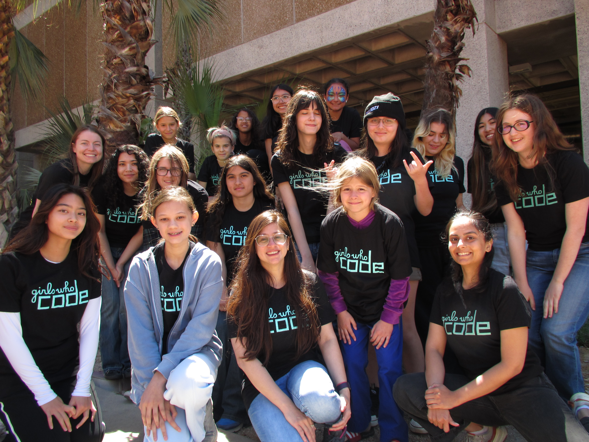
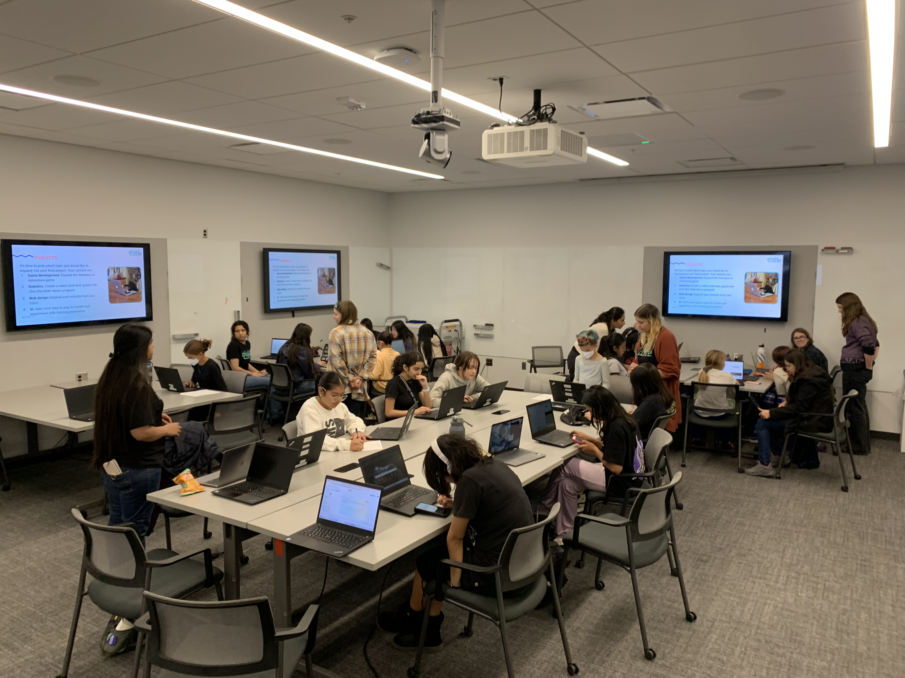

GIRLS WHO CODE

As a facilitator for the UArizona Women in Science and Engineering Girls Who Code program, I supported an organization focused on making computer science more accessible to young female and non-binary students. The curriculum introduced students to Python and other areas of technology through hands-on lessons, collaborative projects, and WISTEM related discussions and presentations. I guided students through projects involving artificial intelligence, game development, web design, and robotics. My role included answering questions, providing clear step-by-step explanations of tasks, and creating project examples to showcase possibilities with technology.
I had an amazing time working with bright, uplifting students who were interested in pursuing future careers in STEM. Facilitating icebreakers, mini games, and discussions about prominent women in technology was a meaningful experience that I feel lucky to have had. This role strengthened my technical knowledge, improved my confidence in professional and educational settings, and helped me develop clear communication skills.
